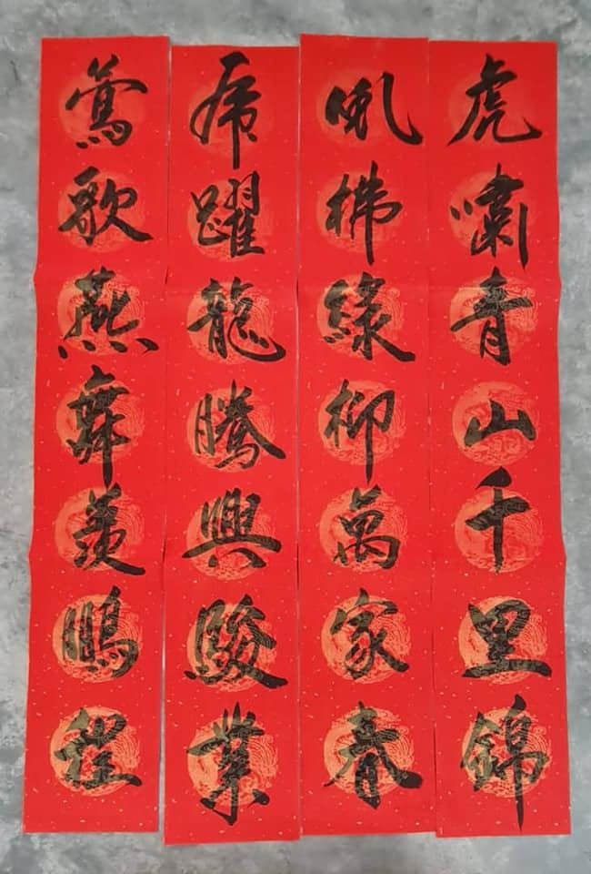
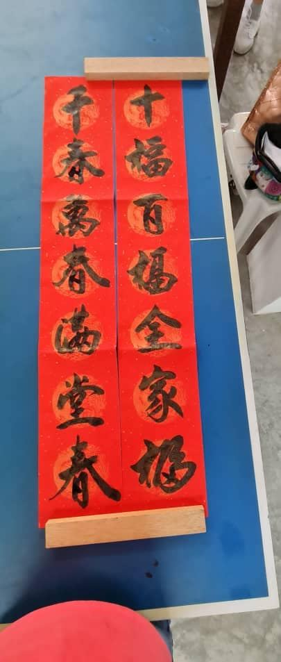
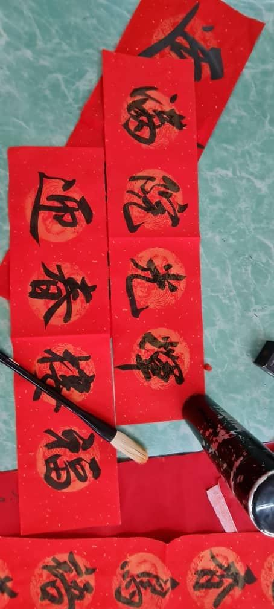
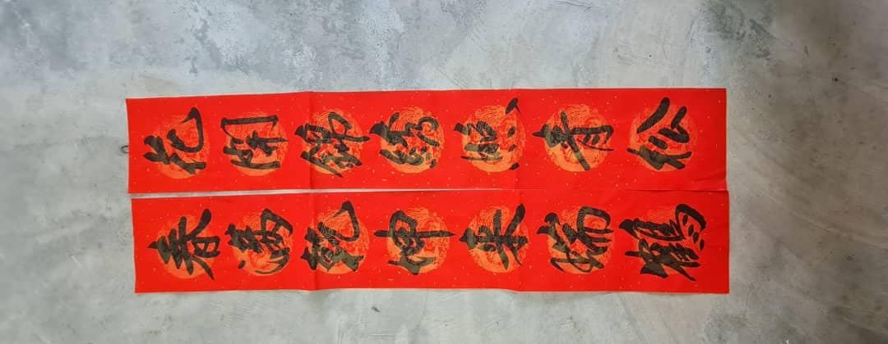
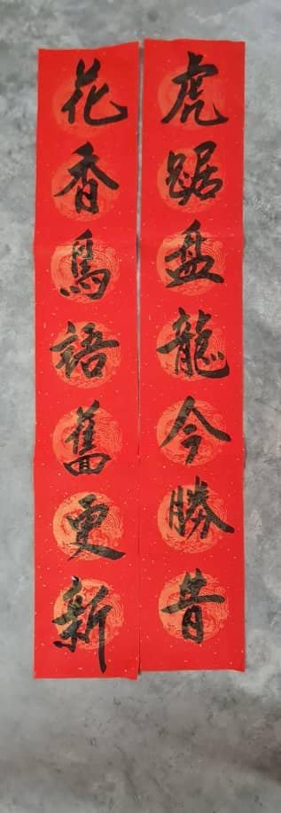
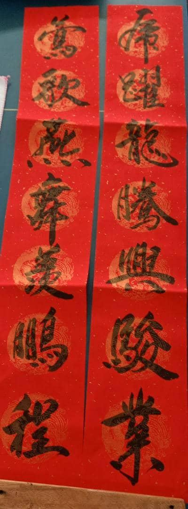
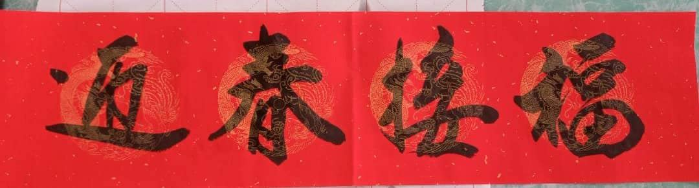
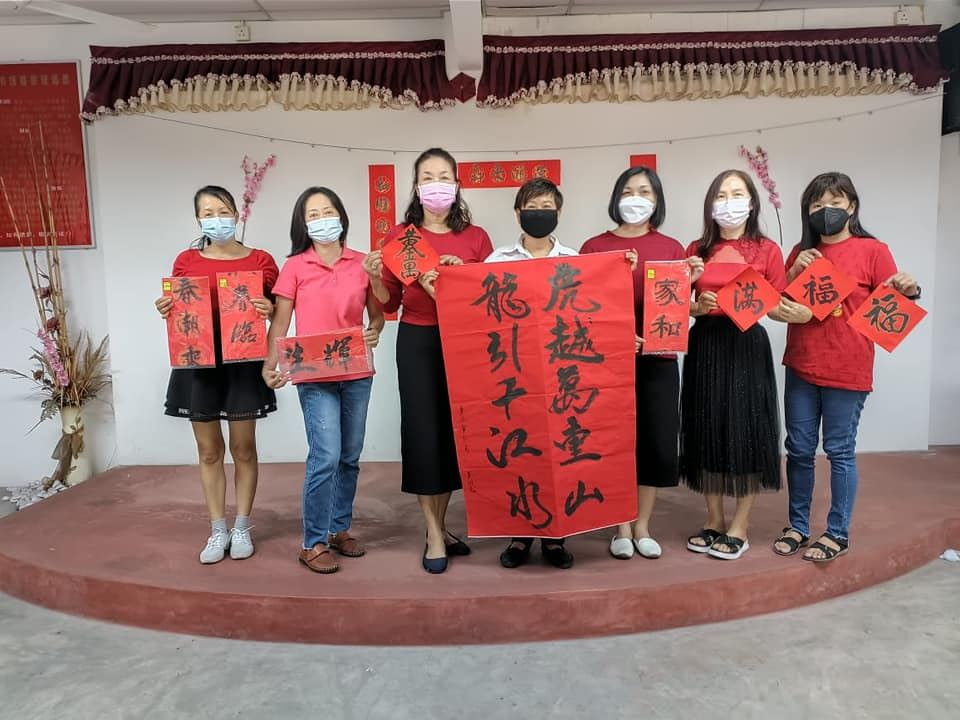

弘扬传统文化，传承艺术精粹，南华独中与曼绒文友会将于2022年1月15日（星期六
弘扬传统文化，传承艺术精粹，南华独中与曼绒文友会将于2022年1月15日（星期六），早上8时正在实兆远金恩大巴刹（Looking Good）联办《虎虎生威挥春》义卖。
南华孩子们走入社区为联课处筹募活动基金。负责此次活动的洪彩胜老师表示当天早上学校会派数位学生及老师当场挥春，财神爷及卡通人物也会在现场助兴。
曼绒文友会总务李联发表示该会书法班导师吴启强老师，助理晓玲及书法班成员会当场挥春。当天的春联义卖会分别以：RM10（学生）和RM28 & 38（老师）乐捐方式进行。
希望热爱华教的热心人士踊跃支持此活动，大家也可以通过预定方式来订购春联。有任何疑问或预定请联络李联发（曼绒文友会总务）0164380186或洪彩胜（南华独中老师）0129411968。







